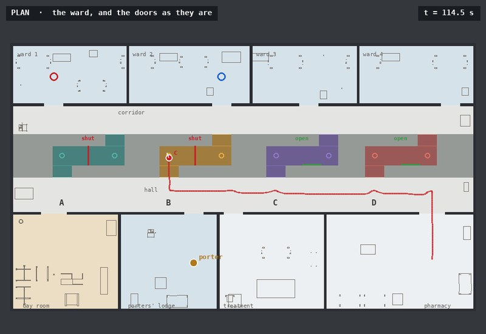
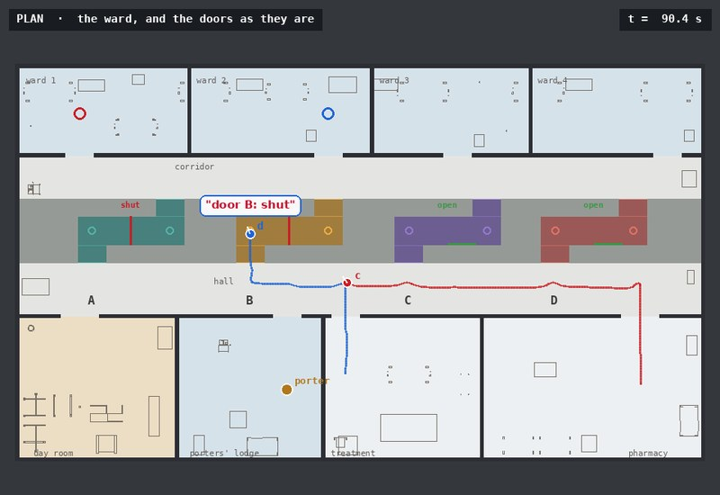
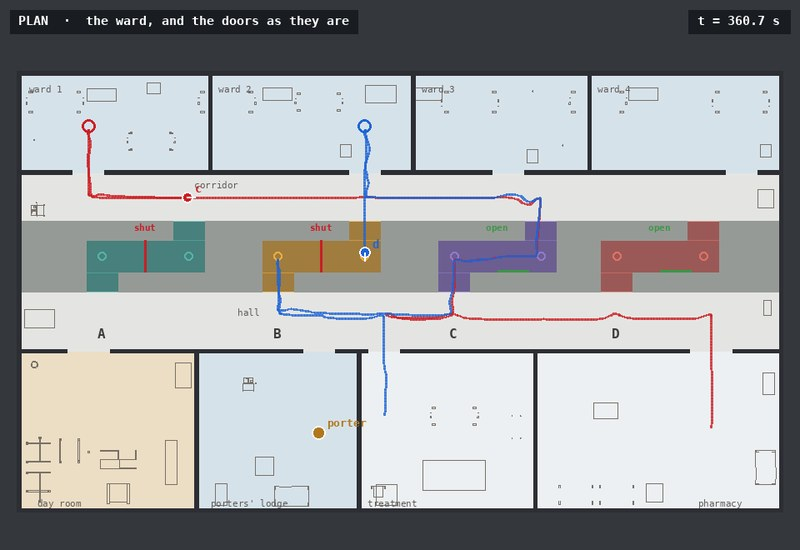
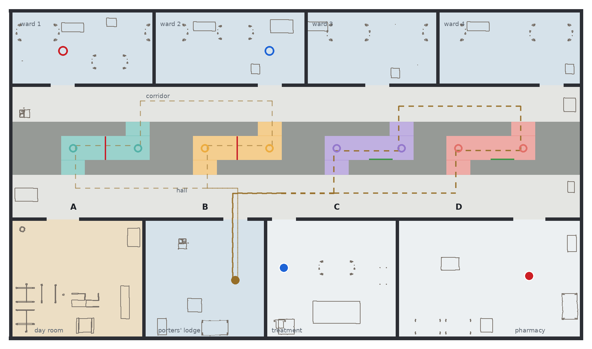
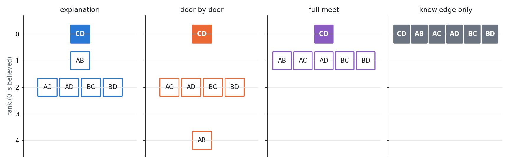
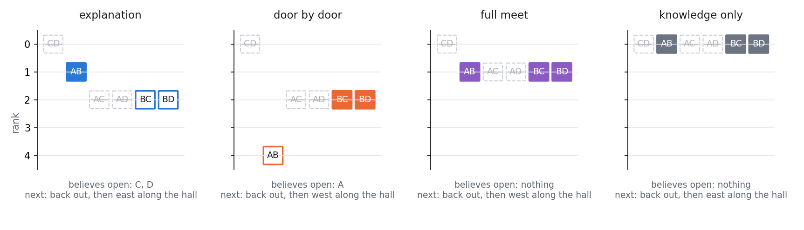
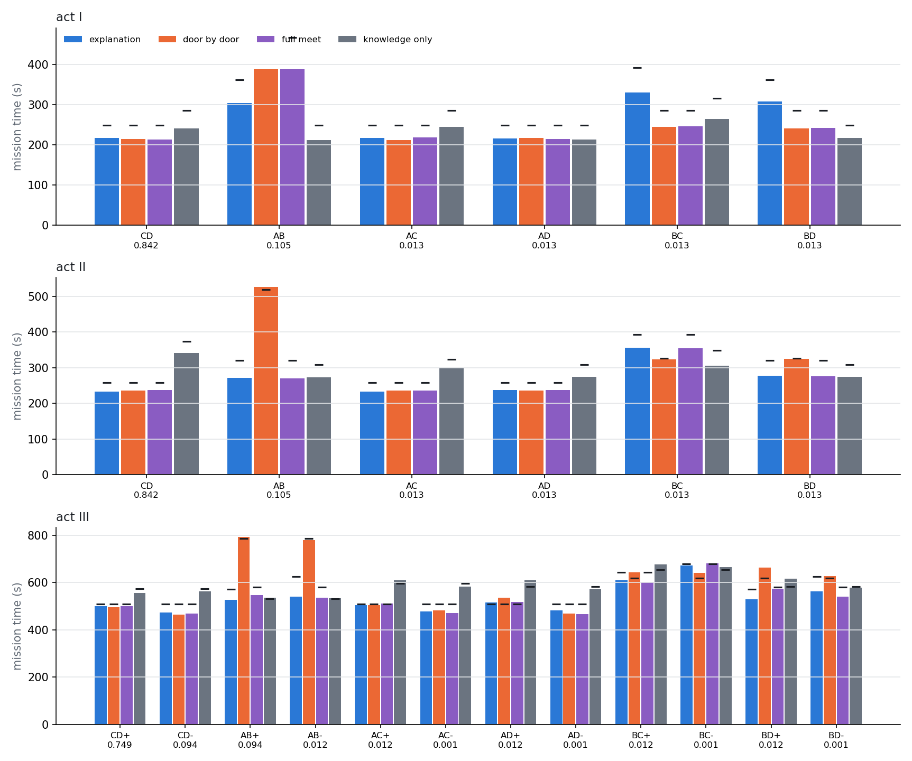
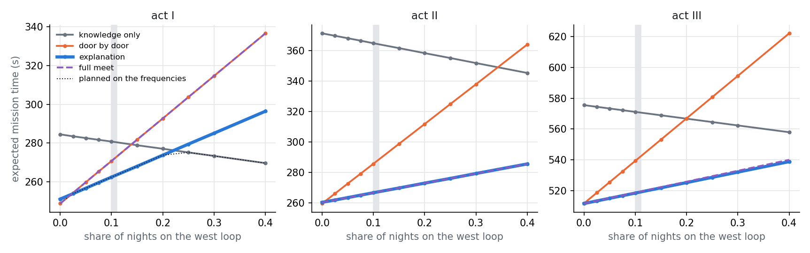

Belief revision · Spohn ranks in the epistemic state · change no robot sees · knowledge and belief preconditions · one and two robots · ROS 2
A hospital floor at night. Four fire doors, A to D from west to east, close four lobbies through a band of linen rooms between the hall and the corridor. Each lobby turns once, so its door can be seen only from a bend inside it. At one in the morning the night porter walks a loop through the band, north through one door and south through another, and shuts both behind him. No robot sees him. Couriers must then cross the band to the wards.
The couriers do not know which loop he walked. They know his habits: on most nights the rostered loop through C and D, on some the west loop through A and B, and on a few one of the other four. That is a belief, and on some nights it is wrong. A false belief on a warehouse floor listed as a limitation that an observation contradicting a belief had no consistent outcome in the planner. Here every world of the epistemic state carries its Spohn rank as an atom, belief is a formula over knowledge and those ranks, and a look or a report that refutes a belief removes worlds as any observation does: the least rank among the worlds left is the new belief. Nothing in plank, Aletheia or ePlanSys was changed for it.
In the first act one courier's first surprise is explained: door B shut makes the west loop the likeliest night, so door A is believed shut as well, and the courier turns back to C without looking at A. In the second, a report of a shut door revises the listener as the sight of it would, and it enters a lobby nobody has looked into. In the third both couriers go there and back, and at two the porter walks again: what a courier knew of a shut door it now only believes, while what it knew of an open door it still knows, since on that walk he only opens.
Every run arrived, 144 of 144. Ranked by the porter's habits, the couriers took the least time in expectation in every act: 228.6, 238.9 and 502.1 s against 232.9, 268.2 and 527.3 s ranked door by door, and 236.8, 331.7 and 557.2 s with no belief. The difference is made on the nights a belief is refuted: on the west-loop night the explanation took 303.8 s in act I against 387.4 door by door, and 272.1 against 526.3 in act II, where the report sent the first courier into a lobby nobody had looked into. Knowledge only, which looks into lobby C on its way, was fastest on that night in act I, 211.4 s, and slowest on the rostered night, the likeliest. On the rare nights the porter's habits mislead, the explanation pays: those nights are in the tables. Without ranks, a KD45 belief admits no policy at all for the first act. 144 runs in Gazebo, every night of every act under all four rankings.
Package belief_revision_demo; policies executed by eplansys, the problems grounded by plank and solved by Aletheia as a check, the ward furnished with Open Robotics' hospital models from Gazebo Fuel[13] and AWS RoboMaker's residential models[14]. The runs used a small patch to PlanSys2's executor, unrelated to belief, for a fault the first batch exposed: a stale request starves a performer. Full account in Belief Revision in a Changing Ward (PDF): the encoding, the propositions and their proofs, the policies, the batch and the implementation findings.
The runs
| take | night | executor | arrived | time |
|---|---|---|---|---|
| act I, explanation | AB: the porter walked A-B | SUCCESS | yes | 302.8 s |
| act I, door by door | AB: the porter walked A-B | SUCCESS | yes | 390.2 s |
| act II, explanation | AB: the porter walked A-B | SUCCESS | yes | 279.2 s |
| act III, explanation | AB-: the porter walked A-B and was held up at two | SUCCESS | yes | 577.5 s |
What the runs show

Revision by explanation A surprise revises doors nobody has seen Ranked by the porter's habits, door B shut makes the west loop the likeliest night and door A shut with it, so the courier never looks at A. Ranked door by door, the same evidence leaves A believed open, and the courier drives to it and finds it shut. See the revision →
Evaluation Least expected time in every act Ranked by the porter's habits: 228.6, 238.9 and 502.1 s in expectation, against 232.9, 268.2 and 527.3 s door by door. Every one of 144 runs arrived. See the evaluation →
Analysis Without ranks there is no policy at all A belief held as a KD45 relation has nowhere to go when it is contradicted: Aletheia exhausts the search for the first act and returns none. With one grade atom a world, belief revises by conditioning, every relation stays an equivalence, and the planner is unchanged. See the analysis →Environment
The ward is a single storey of 28 by 16 m, built for this demonstration in Gazebo. The south half holds the day room, the porters' lodge, the treatment room, where the second courier starts, and the pharmacy, where the first does, all opening onto a hall that runs the width of the building. North of the hall a band of linen rooms and sluices, 2.6 m deep, is crossed by four fire lobbies. Each runs north from the hall, turns east along a jog of 3.2 m and north again to the corridor, and its door stands across the middle of the jog. North of the band a corridor runs the width of the building and four ward bays open off it; the first courier's patient is in ward 1, in the north-west, and the second's in ward 2, opposite lobby B. A door is a kinematic leaf that a node swings about its hinge: shut across the jog, open flat against the jog's south wall. The furniture is Open Robotics' hospital set: trolley beds with patients, bed tables, drip stands, storage racks, an X-ray unit, a mop cart in the lodge; the day room's sofas are AWS's.

What the domain assumes of the floor is tested on the floor plan before anything runs, by casting rays over the occupied cells (tools/check_views.py), in all sixteen states of the doors: from both bends of each lobby the rule a robot decides a door by decides it, and decides it right; from every point of the hall's and the corridor's driving lines, a quarter of a metre apart, a laser gets at most four returns off any door, fewer than the five the rule needs, so a door is decided only from inside its lobby; and every route of the roadmap keeps 0.47 m from anything a robot can hit.
Ranks and belief
A world is what happened tonight: the loop the porter walked at one, and in the third act whether at two he walked it back and opened its doors or was held up. The couriers know all of them are possible. A Spohn ranking[1] assigns each world a natural number, 0 for what is believed and higher for what would surprise more, and a robot believes what holds at the least-ranked worlds it cannot rule out. Four rankings are compared, on the same knowledge and the same floor:
| ranking | the loops at one | at two | what it is |
|---|---|---|---|
| explanation | C-D 0, A-B 1, any other 2 | reopens 0, held up 1 | the porter's habits; the rank of a night is the sum over his two walks |
| door by door | doors differing from C-D's: 0, 2, 4 | doors he changes: held up 0, reopens 2 | minimal change[4], as a map of independent cells ranks a change |
| full meet | C-D 0, any other 1 | held up 0, reopens 1 | the rostered picture believed and nothing else ranked: a KD45 belief that, contradicted, falls back on knowledge |
| knowledge only | all 0 | all 0 | no belief beyond knowledge |

Each world of the epistemic state is labelled with its rank as a grade atom \(g_0, \dots, g_6\), fixed when the problem is written and changed by no action, and every robot's relation stays an equivalence. With the grades in the valuation, belief is a formula over knowledge:
\[ B_r\,\varphi \;=\; \bigvee_{k} \Big( K_r \textstyle\bigwedge_{j<k} \neg g_j \;\wedge\; \hat K_r\, g_k \;\wedge\; K_r(g_k \rightarrow \varphi) \Big), \qquad \neg B_r \neg \varphi \;=\; \bigvee_{k} \Big( K_r \textstyle\bigwedge_{j<k} \neg g_j \;\wedge\; \hat K_r (g_k \wedge \varphi) \Big) \]
The disjunct that holds is the one for the least grade among the worlds \(r\) cannot rule out. The domain uses the second formula as a guard. A courier enters a lobby only if it does not believe the door shut, \(\neg B_r \neg\mathit{open}(x)\); it seeks along the hall or the corridor only if it does not believe every door ahead of it shut; and it crosses only a door it knows to be open, \(K_r\,\mathit{open}(x)\). The executor checks each guard against the epistemic state before it dispatches the action. A look is semi-private, the looker sees the door and the others see that it looked; a report of a door found shut is a public announcement whose precondition is \(K_r\,\neg\mathit{open}(x)\); a crossing is public, so the others learn that the door is open.
The porter's walk at two is an action every courier sees happen and none sees the content of. Its outcome is carried from dusk by an atom, \(\mathit{reopens}\), that nothing observes, and the walk is a single ontic event: if \(\mathit{reopens}\), every door opens. The grade of a world is the sum of the two walks' grades, as for independent events in Spohn's theory[8].
Each courier plans for itself on what it knows. It minimises the time it expects to take, each world of its cell weighted \(\varepsilon^{\,\mathrm{rank}}\) with \(\varepsilon = 1/8\), reading a rank as an order of magnitude[9]; under knowledge only, it minimises its worst time. A courier that finds a door shut reports it at once while its teammate is still on its way. The team's policy is composed in the order ePlanSys dispatches it and written in Aletheia's format by tools/plan.py, which is the planner the AletheiaPlanSolver plugin calls; the plugin validates the policy against the grounded task before the executor runs it. Each courier's cell is read off the product update of the grounded task, so a courier learns from what its teammate visibly does as well as from what it sees and hears.
Revision
In the first act the courier leaves the pharmacy believing the rostered loop, so believing A and B open and C and D shut. It drives west along the hall past C, enters lobby B and finds door B shut. Three loops remain possible, A-B, B-C and B-D, and each ranking now believes something different:

The orders differ only on worlds that are not believed at dusk, and so only on the nights where a belief is refuted. All four are AGM revision operators[2]: by Katsuno and Mendelzon's representation[3] a revision operator is a faithful order on worlds and nothing more. The choice of order is a choice of what a surprise is evidence for. Explanation ranks the night, and so the history that made the doors as they are; door by door ranks only the doors' present state, and so keeps beliefs whose sole support was the explanation the surprise refuted.
The three acts
Act I, one courier. From the pharmacy to ward 1, across the building. The policies of the three rankings that believe the rostered loop all head for B, the nearest door believed open; knowledge only enters C on the way. They part at the surprise.
Act II, two couriers. The second courier starts in the treatment room, between B and C, for ward 2 opposite lobby B, and sets out with the first. It probes B first. When B is shut it reports it, and every robot hears the report. Ranked by explanation, the first courier, still in the hall, revises exactly as it would have on seeing B shut, believes A shut too, and enters lobby C, into which no robot has looked. The second courier then learns that C is open without looking, from seeing the first cross it. Ranked door by door, the same report leaves both believing A open, and both drive west to A.
Act III, there and back. Both couriers deliver and wait in the wards while the porter walks at two; then they return to the pharmacy and the treatment room. A door a courier saw shut on the way out it now only believes shut, or believes reopened: ranked by explanation, he reopens, and the second courier returns through B, which it saw shut. A door it saw open it still knows open, since at two he only opens. When the porter was held up, the courier finds B shut a second time, and revises again: the porter was held up, so A is still shut too.
| act | ranking | night | the doors looked at, in order | predicted |
|---|---|---|---|---|
| I | explanation | AB | c: B shut; c: C open | 361 s |
| I | door by door | AB | c: B shut; c: A shut | 467 s |
| I | full meet | AB | c: B shut; c: A shut | 467 s |
| I | knowledge only | AB | c: C open | 248 s |
| II | explanation | AB | d: B shut; c: C open | 321 s |
| II | door by door | AB | d: B shut; c: A shut | 519 s |
| II | full meet | AB | d: B shut; c: C open | 321 s |
| II | knowledge only | AB | d: C open | 309 s |
| III | explanation | AB+ | d: B shut; c: C open; d: B open (back) | 571 s |
| III | explanation | AB- | d: B shut; c: C open; d: B shut (back) | 625 s |
| III | door by door | AB+ | d: B shut; c: A shut | 785 s |
| III | door by door | AB- | d: B shut; c: A shut | 785 s |
| III | full meet | AB+ | d: B shut; c: C open | 580 s |
| III | full meet | AB- | d: B shut; c: C open | 580 s |
| III | knowledge only | AB+ | c: C open; d: D open | 530 s |
| III | knowledge only | AB- | c: C open; d: D open | 530 s |
The west-loop night under each ranking's policy: every look in order, by the courier (c) or the second courier (d), with what it found; on the way back in act III marked so. A look not made is a door the courier believed shut or crossed knowing it open.
Analysis
A ranked model is an epistemic model \((W, \{\sim_r\}, V)\) with every \(\sim_r\) an equivalence, designated worlds \(W_d\), and a ranking \(\kappa: W \to \mathbb{N}\). Write \([w]_r\) for \(r\)'s cell at \(w\) and \(\min_\kappa X\) for the worlds of \(X\) of least rank. Then \(w \models B_r\varphi\) when \(\varphi\) holds throughout \(\min_\kappa [w]_r\). The compiled model labels each world with the atom \(g_{\kappa(w)}\). Proofs are in the report.
The ePlanSys state node has its own recovery for an observation the model holds impossible: it re-designates every world in which the observed event could fire, a full meet of the designated set, not of any robot's belief. With the grades the model always holds the worlds an observation leaves, and no run here triggered it.
Evaluation
Every night of every act was run under all four rankings in Gazebo, with the porter walking his loop and swinging the doors, from the same starts perturbed by up to 5 cm and 5°: in acts I and II each of the six nights twice, in act III each of the twelve once. A run's time is measured from the start of its first action to the end of its last, in simulated seconds; the porter's walk at two is in act III's time, the same for every ranking. The expected time weights each night by the porter's frequencies, the rostered loop 0.842, the west loop 0.105 and each other loop 0.013; at two he reopens on 0.889 of nights.
| act | ranking | expected | predicted | west loop | arrived |
|---|---|---|---|---|---|
| I | explanation | 228.6 s | 263.3 s | 303.8 s | 12/12 |
| door by door | 232.9 s | 272.0 s | 387.4 s | 12/12 | |
| full meet | 231.7 s | 272.0 s | 388.1 s | 12/12 | |
| knowledge only | 236.8 s | 280.5 s | 211.4 s | 12/12 | |
| II | explanation | 238.9 s | 267.2 s | 272.1 s | 12/12 |
| door by door | 268.2 s | 287.3 s | 526.3 s | 12/12 | |
| full meet | 242.3 s | 267.2 s | 270.6 s | 12/12 | |
| knowledge only | 331.7 s | 364.5 s | 273.7 s | 12/12 | |
| III | explanation | 502.1 s | 518.9 s | 527.1 s / 540.2 s | 12/12 |
| door by door | 527.3 s | 540.9 s | 793.2 s / 778.3 s | 12/12 | |
| full meet | 504.8 s | 519.2 s | 547.2 s / 536.6 s | 12/12 | |
| knowledge only | 557.2 s | 570.9 s | 535.9 s / 532.4 s | 12/12 |
Expected: the mean time of each night's runs weighted by the porter's frequencies. Predicted: the same for the times tools/plan.py predicts. West loop: the mean on the west-loop night, in act III when he reopened at two and when he was held up. In bold, the least expected time of each act.

In act I the expected times were 228.6 s explanation, 231.7 s full meet, 232.9 s door by door, 236.8 s knowledge only. Where its policy differs from another ranking's, the explanation was slower by more than 10 s on AB, by 92 s against knowledge only (frequency 0.105); BC, by 86 s against door by door (frequency 0.013); BD, by 90 s against knowledge only (frequency 0.013). In act II the expected times were 238.9 s explanation, 242.3 s full meet, 268.2 s door by door, 331.7 s knowledge only. Where its policy differs from another ranking's, the explanation was slower by more than 10 s on BC, by 50 s against knowledge only (frequency 0.013). In act III the expected times were 502.1 s explanation, 504.8 s full meet, 527.3 s door by door, 557.2 s knowledge only. Where its policy differs from another ranking's, the explanation was slower by more than 10 s on BC-, by 32 s against door by door (frequency 0.001); BD-, by 21 s against full meet (frequency 0.001). The predicted times were longer than the measured by 27.9 s on average: the planner's speed of 0.17 m/s is conservative, and the executor overlaps some actions the prediction runs apart.

In act I the explanation's policy had the least expected time for every share of west-loop nights from 0.025 to 0.20, and knowledge only from 0.25: when the "rare" loop is that common, its rank is wrong; it matched the policy planned on the frequencies themselves, the optimum for one robot, from 0.025 to 0.20. In act II the explanation's policy had the least expected time for every share of west-loop nights from 0.025 to 0.40. In act III the explanation's policy had the least expected time for every share of west-loop nights from 0.000 to 0.40.
Implementation findings
References
Reproduction
bash tools/validate.sh # the floor, twelve problems, every policy, Aletheia, KD45 python3 tools/make_world.py --act 2 --seed 2 --out RUN ros2 launch belief_revision_demo revision_launch.py dir:=RUN act:=2 formulation:=explanation bash tools/run_one.sh 2 2 explanation RUN 1 # one run in its own lane SEEDS_1="$(seq -s ' ' 1 12)" bash tools/batch.sh BATCH 7 # nights under the four rankings python3 tools/analyse.py BATCH # runs.csv and analysis.json python3 tools/sensitivity.py # other porter frequencies